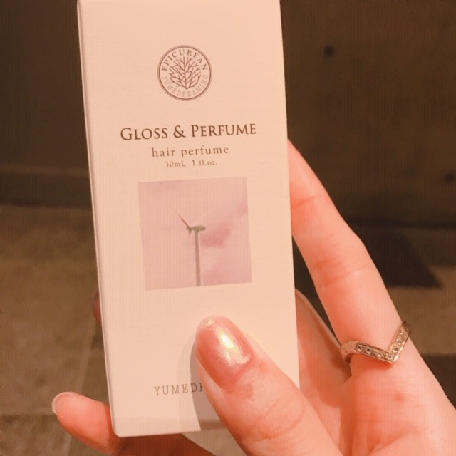

2019/0826Mon生誕Tの季節ですね
街を歩いているときめちゃめちゃに
すきな香りの方が通り過ぎて
でもどなたかわからなくてキョロキョロ
探しちゃいました、、、
いい匂いすぎた、、、香水聞きたかったな、、、
聞けないけど、、、
改めて匂いフェチだなあ~

2019年の生誕Tができました
カジュアルシンプルだけど、洗練されたトレンド感も出したくて
表は、MIONAのロゴをさりげなく
裏は、まだ世に出したことのないプライベート写真の堀にしてみました！
どうかな~❤︎？
去年の夏、蘭世と遊びに行ったときの一枚です☺︎
今年の夏はまだ蘭世と遊びに行けてないや
行きたい~
生誕Tもあと何枚デザインできるのかなぁ、
とかそんなことも考えながら男女ともに
私服でも着やすいようにしました
今しか予約できないので、ぜひぜひ♫
これ着て握手会やライブやイベントに
来てくださってもすごく嬉しいし
夏だと、男性はデニムに白スニーカーを
女の子はデニムショーパンにインしたり
秋冬はこの上に黒のおっきめジャケットとか
コートなんかを羽織っても
モノトーンでオシャレかなぁと♡、
私、男女問わずモノトーンコーデの方がすきで、
全身黒、全身白、黒と白、みたいな
シンプルで洗練された感じに惹かれます
私も握手会やレコメン！なんかで着ます！
おそろいしましょ~(^-^)

髪色をちょっと早めの、秋仕様にしました~
わ~い
『モンブランベージュ』です♡
今年の秋は、茶色をたくさん取り入れたくて
まずは髪色から！笑
洋服もブラウンやベージュのものを集めなきゃ。
秋服も楽しみだなあ

コスメキッチン大好き人間なのですが
最近、新しい香水を買いました◎
オーガニックでちょい大人な香りが堪りません...♡

24時間TVもありがとうございました~

プリンプリン
では
2019/08/26 18:54
コメント(226)
ブログ更新ありがとう！
生誕T素敵でとても良いね！
だから…買うことにします！
これからも体調に気をつけて無理せず頑張ってください！
応援してます！
生誕T素敵でとても良いね！
だから…買うことにします！
これからも体調に気をつけて無理せず頑張ってください！
応援してます！
堀ちゃん、髪色素敵ですっっっ
みおなちゃん、ブログ更新ありがとう。
生誕Tの季節なのですね。
僕はみおなちゃんと誕生日が同じ10/15なので、
何か縁を感じるし、
単純にみおなちゃんめっちゃタイプだしで、
みおなちゃん大好きです。
ずっと味方でいるので、がんばってね。
生誕Tの季節なのですね。
僕はみおなちゃんと誕生日が同じ10/15なので、
何か縁を感じるし、
単純にみおなちゃんめっちゃタイプだしで、
みおなちゃん大好きです。
ずっと味方でいるので、がんばってね。
生誕Tシャツ絶対買います♥
みおちゃんブログ更新ありがとう♪
生誕Tシャツ買わせて頂きました♪
毎年買わせてもらってるけど、みおちゃんの生誕Tシャツはオシャレだよね( ´ω` )/
本当に着やすいし、結構頻繁に着てる(・ω・)
また握手会行く時に着ていくね\(๑´ω`๑)/
プリン会大好きだよ( ´ω` )/
福岡のトゥモロー⊿
生誕Tシャツ買わせて頂きました♪
毎年買わせてもらってるけど、みおちゃんの生誕Tシャツはオシャレだよね( ´ω` )/
本当に着やすいし、結構頻繁に着てる(・ω・)
また握手会行く時に着ていくね\(๑´ω`๑)/
プリン会大好きだよ( ´ω` )/
福岡のトゥモロー⊿
ブログ更新ありがとう
24時間見たよ(^-^)
未央奈ちゃん神宮ライブでパフォーマンス楽しみしてます
これからもずっと応援してます
24時間見たよ(^-^)
未央奈ちゃん神宮ライブでパフォーマンス楽しみしてます
これからもずっと応援してます
お疲れ様なのです└(ﾟ∀ﾟ└) (┘ﾟ∀ﾟ)┘
いい香りは幸せだけど、きついと残念な気持ちになるよ！
香りって大事だよねΣ(´□｀;)！
体調に気を付けて(*>д<)
体調が悪いときは素直になってね！(*´∇｀*)
絢音ちゃんとも何処かに行かないのかな？
んじゃね～！Σ⊂(ﾟДﾟ )
いい香りは幸せだけど、きついと残念な気持ちになるよ！
香りって大事だよねΣ(´□｀;)！
体調に気を付けて(*>д<)
体調が悪いときは素直になってね！(*´∇｀*)
絢音ちゃんとも何処かに行かないのかな？
んじゃね～！Σ⊂(ﾟДﾟ )
みおたんきゃわたん♡
こんばんは。ブログ更新ありがとうございます。
匂いと言えば、私は金木犀が大好きです。あと最近はたばこの煙が好きです。私は3年前に禁煙をして以来、たばこから遠ざかっていますが、喫煙所で他の人が吸っているたばこの煙を吸うと、喫煙していた頃を思い出して、嗅いでしまいます。副流煙の方が体には悪いとわかってはいるのですが・・・。
生誕Tシャツ、おしゃれにできましたね～。予約しようかな？
ではまた。
匂いと言えば、私は金木犀が大好きです。あと最近はたばこの煙が好きです。私は3年前に禁煙をして以来、たばこから遠ざかっていますが、喫煙所で他の人が吸っているたばこの煙を吸うと、喫煙していた頃を思い出して、嗅いでしまいます。副流煙の方が体には悪いとわかってはいるのですが・・・。
生誕Tシャツ、おしゃれにできましたね～。予約しようかな？
ではまた。
生誕T絶対買う〜✨
まだまだ暑いから体調気をつけてね！
まだまだ暑いから体調気をつけてね！
ブログ更新おめでとう！！
体調は大丈夫かな？
生誕T欲しいな…うぅ早く二十歳になりたい
未央奈は季節何が好き？
自分は冬が好きかな、お洒落な服が多いから好き！
未央奈はどうかな？
またね
体調は大丈夫かな？
生誕T欲しいな…うぅ早く二十歳になりたい
未央奈は季節何が好き？
自分は冬が好きかな、お洒落な服が多いから好き！
未央奈はどうかな？
またね
お洒落な生誕Ｔに仕上がったね(*^^*)
体調お大事に！
待ってくれてるファンを大切に！
生誕Tかわいい！
ブログ更新ありがと！！
Tシャツ買います！
Tシャツ買います！
更新ありがとう～
髪色めっちゃ好きだよ
神宮よろしくね！
髪色めっちゃ好きだよ
神宮よろしくね！
生誕Tシンプルだし、まとまってるのでいいな
普段、着たいのであまり奇抜なものは 笑
背面の未央奈ちゃんの写真はインパクトあるけど
大丈夫かなぁ 買っちまうかなぁ
普段、着たいのであまり奇抜なものは 笑
背面の未央奈ちゃんの写真はインパクトあるけど
大丈夫かなぁ 買っちまうかなぁ
みおな体調治った？？お大事にね！
みおな、こんばんは。更新ありがとう！ 近況報告ありがとうございます。 秋仕様にプリン会の写真ありがとうございます。 では、毎日みおなに良いこと沢山ありますように！ おやすみおな！！
ブログ更新ありがとうございます！
生誕Tシャツ買いました！普段から着れそうだし、後ろの写真もめちゃくちゃ可愛い！握手会などで着ていきますね！服の話も参考になります。
髪色も凄く似合っていてきれいです。さすがみおなちゃんです！！！
プリン会大大大大大好きなので嬉しい！
載っけてくれてありがとうございます！
今日も大好きです！
生誕Tシャツ買いました！普段から着れそうだし、後ろの写真もめちゃくちゃ可愛い！握手会などで着ていきますね！服の話も参考になります。
髪色も凄く似合っていてきれいです。さすがみおなちゃんです！！！
プリン会大大大大大好きなので嬉しい！
載っけてくれてありがとうございます！
今日も大好きです！
今晩は!昨日の24時間TVお疲れ様です!
お身体は大丈夫でしょうか？
昨日は俺の大先輩でもある岡村孝子さんの夢をあきらめないでを歌って下さったそうですね!
最初は正直言って驚きましたけれども、今ですね岡村孝子は急性白血病で闘病中ですけれども、きっと君達の歌声に岡村孝子さんはきっと勇気付いたと思いますし、岡崎市民の人達はきっと喜んでくれてると思いますね!
歌って下さってありがとうございました!
此れからもお身体には十分気をつけて活動を頑張って頂きたいと思いますね!
それでは2週間後の握手会でお会いしましょう!
お休みなさい!
こんばんは
そんなに忙しいならゆっくり眠らせてあげたい
そんなに大変ならゆっくり休ませてあげたい
でも活躍もみたいというファンの葛藤です
きっと大変なことの中に
充実感や喜び楽しみが隠されているんだね
頑張ってとしか言えないけど頑張って
それでも無理はしないで
無理しゃうんだろうけど
そんなに忙しいならゆっくり眠らせてあげたい
そんなに大変ならゆっくり休ませてあげたい
でも活躍もみたいというファンの葛藤です
きっと大変なことの中に
充実感や喜び楽しみが隠されているんだね
頑張ってとしか言えないけど頑張って
それでも無理はしないで
無理しゃうんだろうけど
未央奈ちゃん♪こんにちは＼(^o^)／
好きな香りすると探しちゃうよね(*^^*)
生誕T凄く良いね(≧∇≦)
オシャレだね♪
モノトーン良いよね♪
俺も黒とか白の服ばっかり着ちゃう♪
凄く落ち着くよね(*^^*)
未央奈ちゃん凄く可愛い(//∇//)
髪色凄く似合ってるよ♪
24時間TV見たよ♪
メドレー凄く良かったよ(≧∇≦)
凄く可愛いかったよ♪
またね♪
未央奈ちゃん神推し
秀喜より！(≧▽≦)
好きな香りすると探しちゃうよね(*^^*)
生誕T凄く良いね(≧∇≦)
オシャレだね♪
モノトーン良いよね♪
俺も黒とか白の服ばっかり着ちゃう♪
凄く落ち着くよね(*^^*)
未央奈ちゃん凄く可愛い(//∇//)
髪色凄く似合ってるよ♪
24時間TV見たよ♪
メドレー凄く良かったよ(≧∇≦)
凄く可愛いかったよ♪
またね♪
未央奈ちゃん神推し
秀喜より！(≧▽≦)
未央奈2日連続ブログ更新ありがとう！
街を歩いてるときもいい匂いに反応するなんて、さすが未央奈は匂いフェチだなあ。でも僕も紅茶系の良い香りがすると、その香水が気になるよ。
生誕T注文したよ！すごくおしゃれでいいね。シンプルでMIONAの文字がブランドみたい。裏の写真は可愛すぎじゃない？普段着てたら背中の可愛い子は誰？って注目されそう。11月の個握に着ていけたらいいな。
モンブランベージュ似合ってて良い色だね。秋服の未央奈も楽しみだなあ。
24時間テレビ見たよ。プリン会が揃って良かったね。
モバメで連続すずほりの写真ありがとう。良い関係だね。未央奈の1番の理解者がいてくれてありがたい。僕も未央奈の理解者でいられたらいいな。
では！
街を歩いてるときもいい匂いに反応するなんて、さすが未央奈は匂いフェチだなあ。でも僕も紅茶系の良い香りがすると、その香水が気になるよ。
生誕T注文したよ！すごくおしゃれでいいね。シンプルでMIONAの文字がブランドみたい。裏の写真は可愛すぎじゃない？普段着てたら背中の可愛い子は誰？って注目されそう。11月の個握に着ていけたらいいな。
モンブランベージュ似合ってて良い色だね。秋服の未央奈も楽しみだなあ。
24時間テレビ見たよ。プリン会が揃って良かったね。
モバメで連続すずほりの写真ありがとう。良い関係だね。未央奈の1番の理解者がいてくれてありがたい。僕も未央奈の理解者でいられたらいいな。
では！
通りすがりにいい香りすぎて聞きたいときありますね
ずっとだれかつけてたら名前聞きたい香りがある
まあ同じく聞けないんだけど。
ずっとだれかつけてたら名前聞きたい香りがある
まあ同じく聞けないんだけど。
お疲れ様です!
モノトーンいいですよね〜
派手ではない分、洗練されたというかシンプルだけど奥が深いというか私はそんな感じな気がします。
ちなみになんですけどね、私の車の未央奈さんのサイドラッピングはモノクロなんです(笑)
モノトーンとは違うかもしれませんが、いい味出してると思いますよ！
派手ではない分、洗練されたというかシンプルだけど奥が深いというか私はそんな感じな気がします。
ちなみになんですけどね、私の車の未央奈さんのサイドラッピングはモノクロなんです(笑)
モノトーンとは違うかもしれませんが、いい味出してると思いますよ！
未央奈ちゃん本当にかわいいよ！
おしゃれを思い切り楽しんでね。
まとめとかの意見なんか無視していいと思うしデタラメなこと書いて嫉妬して盛り上がってるだけだから反応しない方が絶対後思う。、未央奈ちゃん辛いと思うけど応援してます
おしゃれを思い切り楽しんでね。
まとめとかの意見なんか無視していいと思うしデタラメなこと書いて嫉妬して盛り上がってるだけだから反応しない方が絶対後思う。、未央奈ちゃん辛いと思うけど応援してます
未央奈さん今日も、可愛いですね❤️
二十四時間TV見ました
これからも頑張ってくださいね
二十四時間TV見ました
これからも頑張ってくださいね
未央奈さん生誕tシャツデザイン良いねいつも忙しいのにまめにブログ更新ありがとう。疲れてる？
絢音さんの事も教えて？絢音さんあんまり知らないからです。オシャレです。
絢音さんの事も教えて？絢音さんあんまり知らないからです。オシャレです。
プリン会大好きなので、嬉しい!ありがとう!
安定にかわいい
安定にかわいい
ブログ更新、ありがとー！
生誕T、ポチりましたー！
届くのが楽しみ(^-^)
大事な推しメンTシャツかけるハンガー、
まだまだあるよー！
生誕T、ポチりましたー！
届くのが楽しみ(^-^)
大事な推しメンTシャツかけるハンガー、
まだまだあるよー！
未央奈ちゃん、今日も一日お疲れさまです。
無理しないでって言っているでしょ！
でもそんなことも隠して
メディアの前では笑顔で対応する姿、
プロだなって思います！
でも、本当に無理しないでね！！！
これからも応援しています！！！
これからも未央奈のペースで、
未央奈らしく頑張ってください！！！
無理しないでって言っているでしょ！
でもそんなことも隠して
メディアの前では笑顔で対応する姿、
プロだなって思います！
でも、本当に無理しないでね！！！
これからも応援しています！！！
これからも未央奈のペースで、
未央奈らしく頑張ってください！！！
ブログ更新ありがとうございます！ 生誕Tとってもいいですねーー！ 体調には気をつけて頑張ってください！ 応援してます！大好きです！
いい匂いがすると、どこからだろうって気になっちゃうよねぇ。自分も、堀ちゃんと同じ匂いフェチな気がする(・ω・)笑 そして、堀ちゃんからはいつでもいい香りがしそう(〃▽〃) 生誕Tシャツ←ロゴも堀ちゃんphotoのbackプリントも可愛らしくてとってもオシャレにも見える♪♪ 秋っぽい髪色もすごく似合ってるねぇ(*´-`)b
未央奈、ブログ更新ありがとう＼(^o^)／
生誕Tシャツ予約したよ(*≧∀≦*)
とてもシンプルで素敵だね(^o^)v
凄く着やすいデザインだと思う！
握手会で着て行くからね！
まだ世に出したことのないプライベート写真はホント嬉しい(´∀｀)
レア感半端ない(^o^)
あと、モノトーンコーデ挑戦するね(^^)/
『モンブランベージュ』の髪色、素敵だね(^o^)v
かわいい(ﾉ≧▽≦)ﾉ
未央奈はどんな髪色でも似合うよね！
24時間テレビ観たよ！
ポニテ可愛すぎた(〃▽〃)
体調良くなったの？
心配だよ(ToT)
あまり無理しないでね(。>д<)
では(*￣∇￣)ノ
生誕Tシャツ予約したよ(*≧∀≦*)
とてもシンプルで素敵だね(^o^)v
凄く着やすいデザインだと思う！
握手会で着て行くからね！
まだ世に出したことのないプライベート写真はホント嬉しい(´∀｀)
レア感半端ない(^o^)
あと、モノトーンコーデ挑戦するね(^^)/
『モンブランベージュ』の髪色、素敵だね(^o^)v
かわいい(ﾉ≧▽≦)ﾉ
未央奈はどんな髪色でも似合うよね！
24時間テレビ観たよ！
ポニテ可愛すぎた(〃▽〃)
体調良くなったの？
心配だよ(ToT)
あまり無理しないでね(。>д<)
では(*￣∇￣)ノ
みおなー！！
生誕Tめっちゃほしい！！
誕生日９月だから買ってもらおうとしてる！！
ねだろう！！
みおなが後ろにいるのはやばい！
守護神w
ほしいな…
私も！
においフェチかもしれない…
今日遊んでて、何人か前に通ったときに、すごいいいにおいの人がいて、探してたけど、見つからんかった‼️
これからも頑張って‼️
生誕T買ってもらえるように願います！
生誕Tめっちゃほしい！！
誕生日９月だから買ってもらおうとしてる！！
ねだろう！！
みおなが後ろにいるのはやばい！
守護神w
ほしいな…
私も！
においフェチかもしれない…
今日遊んでて、何人か前に通ったときに、すごいいいにおいの人がいて、探してたけど、見つからんかった‼️
これからも頑張って‼️
生誕T買ってもらえるように願います！
24時間テレビ観てたけど、観てる時間が、違って見えなかった悔しい。でもブログで秋のファッションが、観れたから良かった。髪の色変えたら雰囲気も、変わってすごく大人に感じられます。最高、未央奈ちゃん。
ブログ更新楽しみに待ってます。癒される香水の、紹介お願いします。ブログ更新ありがとーバイバイ
ブログ更新楽しみに待ってます。癒される香水の、紹介お願いします。ブログ更新ありがとーバイバイ
モンブランベージュ！めっちゃ似合ってます！
Tシャツ予約します！
最近未央奈のブログを、来ないかな？って待っちゃう笑
これからも頑張って下さい！
Tシャツ予約します！
最近未央奈のブログを、来ないかな？って待っちゃう笑
これからも頑張って下さい！
未央奈可愛すぎる、、大好き！！！！！
未央奈ブログ更新ありがとう！
24時間TV観てたよ！
乃木坂のメンバーが歌で元気や、応援したのは絶対に届いてると思う！
未央奈ちゃんの姿もちゃんと見つけれたよ！
未央奈の誕生Tシャツ良いね！
誕生Tシャツ買おうかな！
買ったらそれ来て握手会行くね！
またコメントします！
24時間TV観てたよ！
乃木坂のメンバーが歌で元気や、応援したのは絶対に届いてると思う！
未央奈ちゃんの姿もちゃんと見つけれたよ！
未央奈の誕生Tシャツ良いね！
誕生Tシャツ買おうかな！
買ったらそれ来て握手会行くね！
またコメントします！
こんばんは
生誕Tシャツいい感じやね。
24時間テレビお疲れ様でした。
生誕Tシャツいい感じやね。
24時間テレビお疲れ様でした。
みおちゃんこんばんは！
今日も一日お疲れ様です！
24時間テレビよかったね♩
見られなかったけど、たくさん映ったとの情報あったよ！
私はグリーンのtシャツゲットしました。
コスメキッチン私も好き〜♡
勝手に親近感(^O^)
今日も一日お疲れ様です！
24時間テレビよかったね♩
見られなかったけど、たくさん映ったとの情報あったよ！
私はグリーンのtシャツゲットしました。
コスメキッチン私も好き〜♡
勝手に親近感(^O^)
こんばんは。
街中で気になる匂い、気持ち分かります。
納得いくまで、突き詰めたいですよね。
生誕Tシャツは、早くも締め切りなんですよね。
２着予約しましたよ！
シンプルかつオシャレでホント楽しみです。
前作もビジュアルオシャレで、ホットギミック観る度に着て行きました。
渋谷の東映に何度か行ったので、渋谷の街でよくガン見され、誇らしく思って歩いてました。
今年のは、どの様なドラマが起きるか、楽しみです。
流石の秋を先取りモンブランブラウン、オシャレでお似合いです。
綺麗なお姉さんですよ。
かなり良いですね、好きかも。
秋服コーデ、楽しみにしてますよ。
未央奈さんのセンス、魅せて下さいね。
24時間TVお疲れ様でした。
輝いてましたよ！
募金の立会いは、短い間で終わったのかな？
お身体をお大事に。
頑張って行きましょう！
街中で気になる匂い、気持ち分かります。
納得いくまで、突き詰めたいですよね。
生誕Tシャツは、早くも締め切りなんですよね。
２着予約しましたよ！
シンプルかつオシャレでホント楽しみです。
前作もビジュアルオシャレで、ホットギミック観る度に着て行きました。
渋谷の東映に何度か行ったので、渋谷の街でよくガン見され、誇らしく思って歩いてました。
今年のは、どの様なドラマが起きるか、楽しみです。
流石の秋を先取りモンブランブラウン、オシャレでお似合いです。
綺麗なお姉さんですよ。
かなり良いですね、好きかも。
秋服コーデ、楽しみにしてますよ。
未央奈さんのセンス、魅せて下さいね。
24時間TVお疲れ様でした。
輝いてましたよ！
募金の立会いは、短い間で終わったのかな？
お身体をお大事に。
頑張って行きましょう！
生誕Tシャツカッコいい！
俺、VANSの白色のスニーカー履いてるから合う
じゃん！
未央奈ちゃんは冬が好きなんだね！
さっきのメール見たけど、指輪は全然付けても
大丈夫だよ！
化粧品のCMにもある通り女の子ってほんと楽しいだよ！
俺、VANSの白色のスニーカー履いてるから合う
じゃん！
未央奈ちゃんは冬が好きなんだね！
さっきのメール見たけど、指輪は全然付けても
大丈夫だよ！
化粧品のCMにもある通り女の子ってほんと楽しいだよ！
24時間TV、日曜の午後の数時間は沖縄でも放送が有り、出演を観ることができました。
(^ー^)ﾖｶｯﾀ
(^ー^)ﾖｶｯﾀ
未央奈～！
昨日もコメントしちゃったけど、
未央奈の生誕グッズ、全部買ったよ～！
Tシャツはほんとにおしゃれだし、着やすそう！
握手会に着て行くね♪お揃い嬉しい～❤️
あと24時間テレビのTシャツも未央奈達が着てたのと同じ白持ってて、昨日着ながら見てたんだ～！
それもお揃い♪
今日も疲れちゃった…。初ライブに向けて体調気を付ける！お互い気を付けようね！
またコメントするね～☺️
昨日もコメントしちゃったけど、
未央奈の生誕グッズ、全部買ったよ～！
Tシャツはほんとにおしゃれだし、着やすそう！
握手会に着て行くね♪お揃い嬉しい～❤️
あと24時間テレビのTシャツも未央奈達が着てたのと同じ白持ってて、昨日着ながら見てたんだ～！
それもお揃い♪
今日も疲れちゃった…。初ライブに向けて体調気を付ける！お互い気を付けようね！
またコメントするね～☺️
聞かないんかい！(笑)
あれ～生誕祭～？
3月7日･･･
あ、あ～それは未央奈の日でしたね(笑)
Tシャツ･･･バレちゃうな～
推しが～～
デザインは良き良きだけど～
バレちゃうな～～
夏はファン全開ですね(笑)
ん？香水？
声かけて聞かなかったのに？
あ～～これも秋先取りの一環･･･
プリン食べたくなってきた･･･
あれ～生誕祭～？
3月7日･･･
あ、あ～それは未央奈の日でしたね(笑)
Tシャツ･･･バレちゃうな～
推しが～～
デザインは良き良きだけど～
バレちゃうな～～
夏はファン全開ですね(笑)
ん？香水？
声かけて聞かなかったのに？
あ～～これも秋先取りの一環･･･
プリン食べたくなってきた･･･
未央奈ー
生誕T買ったよー！！
握手会で着ていくね
大好き
生誕T買ったよー！！
握手会で着ていくね
大好き


生誕Tシャツの季節ですね～！！
今年もいいデザイン！
ぜひ握手会で着て、お話したい！
秋の髪型の!!堀ちゃんも似合っておる！
しかもお洋服も秋仕様！！
ブログでも秋服あげてね！
24時間テレビも見させて頂きました！
こちらも元気もらいましたよ～！
もうプリン会の3人が総合司会みたい…笑
堀ちゃんもいつか羽鳥さんの隣に…見たいな～笑
頑張ってね！
最近は更新多くて嬉しいです！
次回の更新も楽しみにしてるよ～！！
では！体調1番で！
おやすみおな～！！